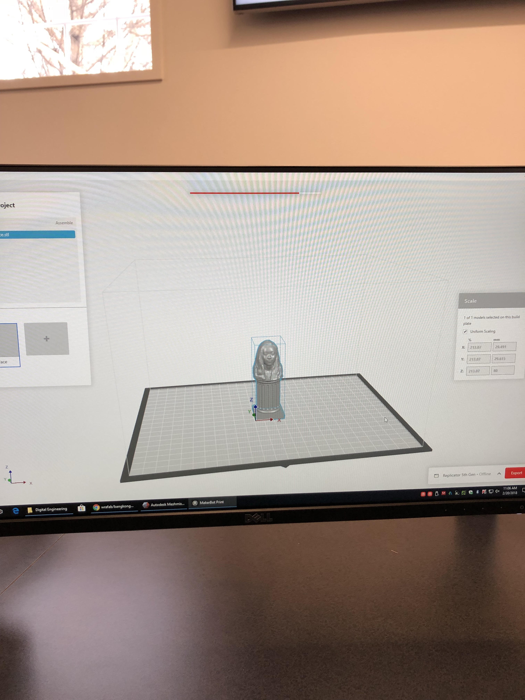
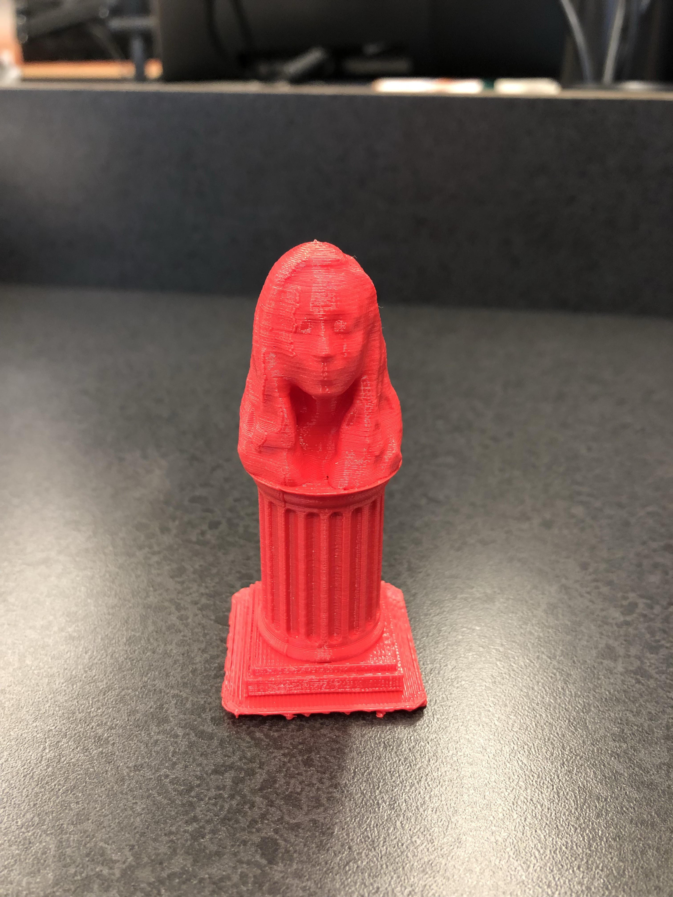
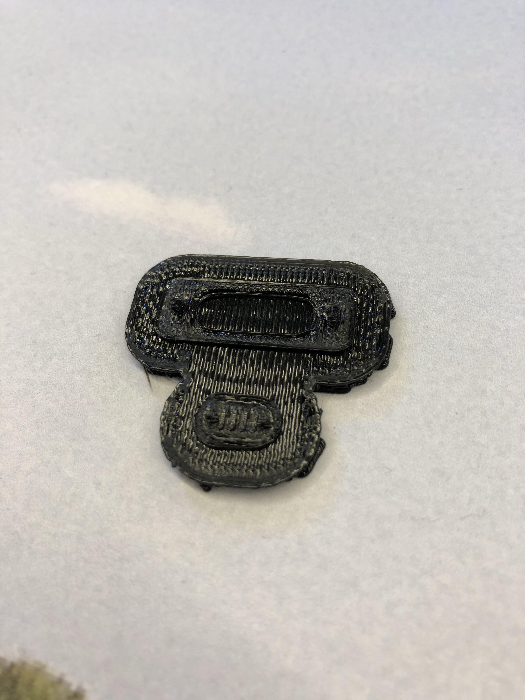
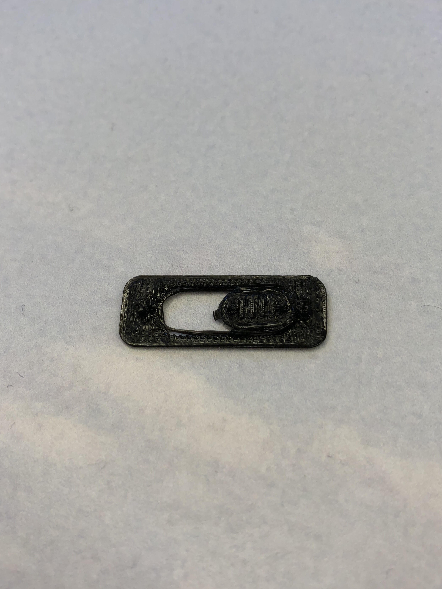

Index
Rotation 5: 3D Printing and Scanning
Project Description:
The limitations for the Makerbot Replicator 5th Gen printers:
The size of the object that is being printed is limited to the size of the platform on the 3D printer
Needs to refill the printer ink carthridge
The details on an object can not be too refined because the printing materials are not able to detect small intricate details
The design rules for the Makerbot Replicatior 5th Gen printers:
Use softwares such as Fusion360 and makerbot to design your perfered object for 3D printing
Project Description:
For my second project, I had to combine two 3D files using the Meshmixer software. First, I had my friend scan my face, then I downloaded the pedestal template online on Thingiverse. I combined my head on the pedestal and smoothed out any features that were protruding. I transfered the overall design to Makerbot and exported it so it is ready to be 3D printed.


Project Description:
Maggie Corl and I decided to work together to 3D print something useful using additive manufacturing. We decided to print a web camera cover. A web camera cover is useful because the FBI won't be able to watch our every move when we are on our laptops. The design process was relatively easy and we used the Fusion360 and Makerbot software to make this all possible.
Files:

